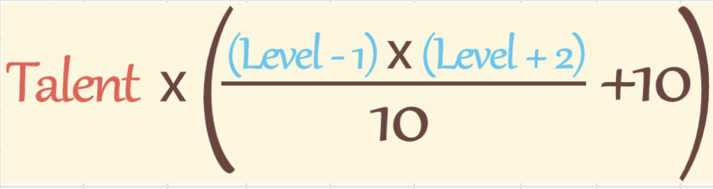
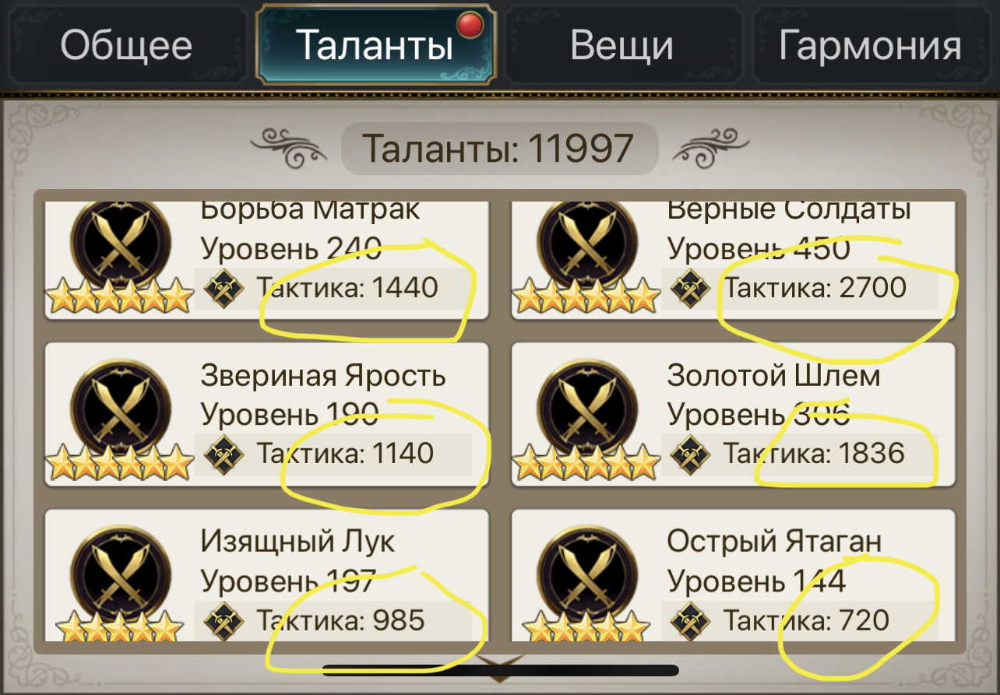
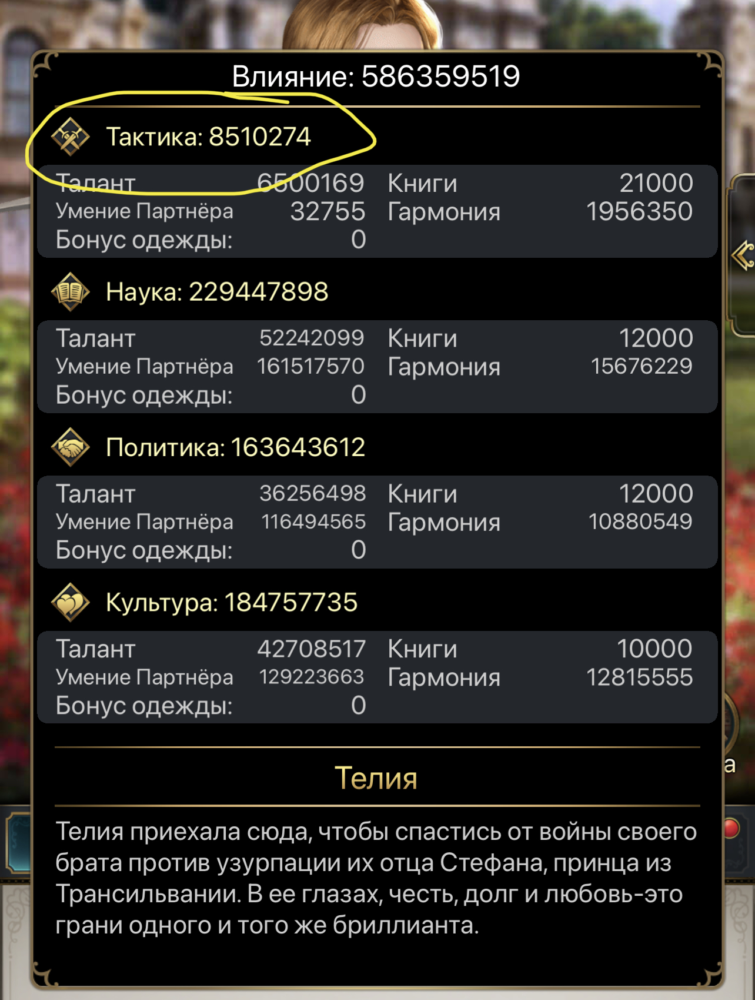

Репутация от талантов на определенном уровне советника рассчитывается по формуле:
По формуле выше считается "чистая" репутация от талантов - это значит, что бонус гармонии или наложницы добавляется к этому дополнительно
Если надо посчитать, сколько репутации даст поднятие уровня при фиксированных талантах, используем калькулятор ниже
Если же наоборот, надо зафиксировать уровень и влить талантов:
А когда надо повысить и уровень и таланты влить, считаем тут:
И маленький бонус - калькулятор урона в зависимости от уровня (школа добавляется отдельно!)
Число талантов тактики - это такая циферка, ради которой нужно сложить все имеющиеся таланты в тактику у советника. На скрине ниже 8821 талант тактики.
Показатель тактики - это общее число репутации тактики с бонусом наложницы и/или гармонии. На скрине ниже показатель тактики равен 80510274 это сумма репутации от талантов, книг, бонуса наложницы и бонуса гармонии

Внимание! Если вы считаете сколько урона станет от повышения уровня советника - то конечно же необходимо пересчитать покзатель тактики для нового уровня. Если вам интересно прикинуть "на глаз" урон, показатель тактики можно не пересчитывать, он на самом деле дает небольшой вклад в урон